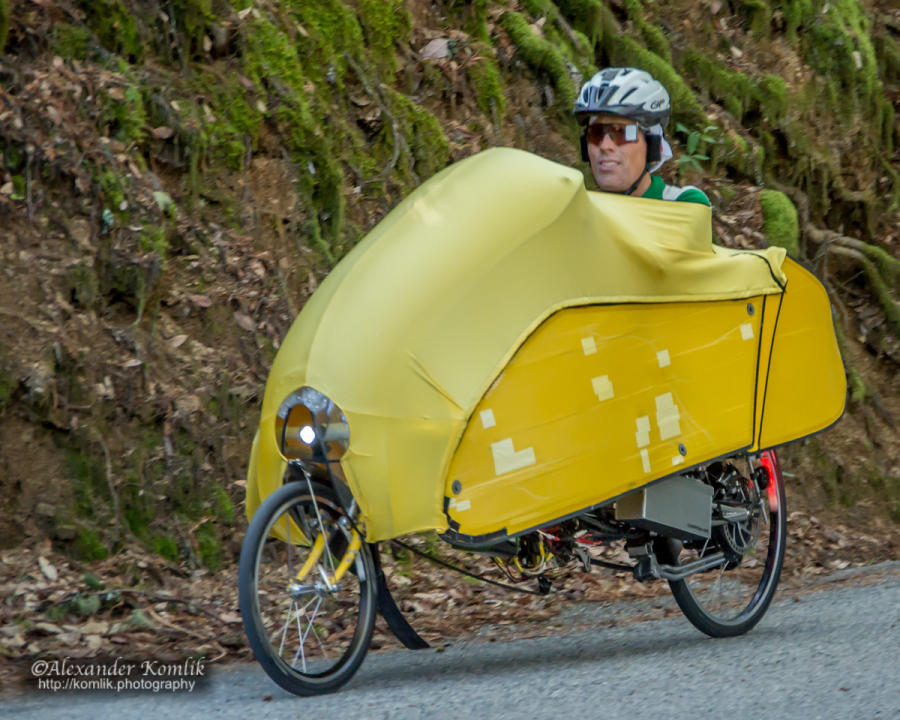

|
 |
|  |
| Bill Bushnell crosses the line first, winning the E-Bike division (Alexander Komlik) |
Spectacular weather and an absolutely spectacular climb made for a nearly perfect Low-Key Hillclimb. Zach Ulissi came back from a tough day on Butano Fire Road to take the W among the men, while Team DNA's Florence Charfon led a team 1-3 with Kathleen Abadie in the women to beat series overall #1 Katie Quinn of Easy Rider. Easy Riders took the team win for the day, with DNA second, while the Sisters and Misters showed excellent stamina with a solid third. Bill Bushnell impressively took the E-bike category, while Dan Connelly was the sole runner.
Note this year the timing started at the intersection of Lobitas Creek Cut-off, the real start of climbing, while in 1997 the same climb began at Highway 1, so comparing times from these two years must be done with care.
KOM special mention qualifiers indicated with orange background.
| pl | # | name | team | cat | time | mph | fph | score |
|---|---|---|---|---|---|---|---|---|
| 1 | 403 | Florence Chardon | Team DNA | 20+ | 35:24 | 11.86 | 3390 | 129.09 |
| 2 | 239 | Katie Quinn | Easy Riders | 30- | 35:24 | 11.86 | 3390 | 129.09 |
| 3 | 400 | Kathleen Abadie | Team DNA | 20+ | 35:36 | 11.80 | 3371 | 128.28 |
| 4 | 121 | Jennie Phillips | Sr's & Mr's of No Mercy | 50+ | 36:42 | 11.44 | 3270 | 124.00 |
| 5 | 138 | Marty Scott | LGBRC | Just Make It To The Top | 37:39 | 11.16 | 3187 | 120.52 |
| 6 | 23 | Shaena Berlin | Easy Riders | 2 | 38:45 | 10.84 | 3097 | 116.72 |
| 7 | 8 | Janet Gardner | Sr's & Mr's of No Mercy | 45+ | 39:01 | 10.76 | 3076 | 115.83 |
| 8 | 47 | Bonnie Denoyer | LGBRC | 45+ | 40:13 | 10.44 | 2984 | 111.99 |
| 9 | 116 | Heather Peck | CCAP | 45+ | 40:18 | 10.42 | 2978 | 111.73 |
| 10 | 226 | Anna Janas | Stanford Cycling | Katie's Domestique ;) | 44:28 | 9.45 | 2699 | 100.13 |
| 11 | 706 | Sofia Prokop | SoKathFlo | 20+ | 46:08 | 9.10 | 2601 | 96.11 |
| 12 | 162 | Jennifer Wilson | Easy Riders | 3 | 46:18 | 9.07 | 2592 | 95.73 |
| 13 | 603 | Andrea Ivan | Silicon Valley Triathlon | 60+ | 61:05 | 6.88 | 1965 | 70.31 |
100 point reference time for division Women = 44:31
| pl | # | name | team | cat | time | mph | fph | score |
|---|---|---|---|---|---|---|---|---|
| 1 | 309 | Zachary Ulissi | Easy Riders | 2 | 30:17 | 13.87 | 3963 | 124.65 |
| 2 | 115 | Chris Peck | CCAP | 45+ | 30:21 | 13.84 | 3954 | 124.34 |
| 3 | 63 | Christopher Evans | Easy Riders | 1 | 30:22 | 13.83 | 3952 | 124.27 |
| 4 | 37 | David Collet | Easy Riders | 45+ | 30:22 | 13.83 | 3952 | 124.27 |
| 5 | 410 | Carl Nielson | Sr's & Mr's of No Mercy | 55+ | 30:23 | 13.82 | 3950 | 124.19 |
| 6 | 52 | Paul Dixon | Easy Riders | 35+ | 30:24 | 13.82 | 3947 | 124.11 |
| 7 | 147 | Joseph Sullivan | San Jose Bike Club | 35+ | 31:27 | 13.35 | 3816 | 119.51 |
| 8 | 72 | Scott Gammon | Legendary | 6 | 31:43 | 13.24 | 3783 | 118.39 |
| 9 | 412 | Travis Retzer | Team CVC | 2 | 31:49 | 13.20 | 3772 | 117.98 |
| 10 | 237 | Stefano Profumo | Lange Twins | 35+ Cat 1 | 31:57 | 13.15 | 3756 | 117.43 |
| 11 | 207 | Paul Castonguay | Team DNA | 50+ | 32:00 | 13.12 | 3750 | 117.22 |
| 12 | 217 | Paul Famiglietti | Fenwick & West | 2 | 32:05 | 13.09 | 3740 | 116.88 |
| 13 | 93 | Bradley Lovegren | Easy Riders | 25+ | 32:12 | 13.04 | 3727 | 116.41 |
| 14 | 90 | Bill Laddish | Team CVC | 45+ | 32:48 | 12.80 | 3659 | 114.04 |
| 15 | 172 | Chase King | Team Swift | Junior | 33:31 | 12.53 | 3580 | 111.33 |
| 16 | 402 | Anthony Beron | Stanford University | 5 | 33:34 | 12.51 | 3575 | 111.15 |
| 17 | 205 | Adam Bry | Skydio Inc | 30+ | 33:46 | 12.44 | 3554 | 110.41 |
| 18 | 84 | David Kalcic | Sr's & Mr's of No Mercy | Junior | 33:50 | 12.41 | 3547 | 110.17 |
| 19 | 247 | Nils Tikkanen | Crazy Cat Man | 33:55 | 12.38 | 3538 | 109.87 | |
| 20 | 136 | Brian Schuster | Easy Riders | 2 | 33:56 | 12.38 | 3536 | 109.81 |
| 21 | 411 | Bruce Pauly | Sr's & Mr's of No Mercy | 55+ | 34:00 | 12.35 | 3529 | 109.57 |
| 22 | 120 | Jim Perreira | Mt. Madonna Maulers | 50+ | 34:16 | 12.26 | 3502 | 108.62 |
| 23 | 128 | Hal Rooney | LGBRC | 55+ | 35:05 | 11.97 | 3420 | 105.81 |
| 24 | 20 | Bruno Acklin | Clagnuts | 55+ | 36:01 | 11.66 | 3332 | 102.76 |
| 25 | 106 | Dennis Mitsch | Unattached | 40+ | 36:16 | 11.58 | 3309 | 101.97 |
| 26 | 126 | James Rainbow | Pen Velo/Pomodoro | 40+ | 36:17 | 11.58 | 3307 | 101.92 |
| 27 | 240 | Agustin Rojas-Munoz | Swamis | 45+ | 36:41 | 11.45 | 3271 | 100.68 |
| 28 | 248 | Shai Traister | easy going | 40+ | 36:41 | 11.45 | 3271 | 100.68 |
| 29 | 68 | Joseph Fong | Team CVC | 4 | 37:21 | 11.24 | 3213 | 98.68 |
| 30 | 704 | Christian Mickelsen | Tirol | Local | 37:53 | 11.09 | 3168 | 97.14 |
| 31 | 73 | Bruce Gardner | Sr's & Mr's of No Mercy | 45+ | 38:04 | 11.03 | 3152 | 96.61 |
| 32 | 235 | Frank Paysen | Diablo | 55+ | 38:43 | 10.85 | 3099 | 94.81 |
| 33 | 97 | Paul McKenzie | Sr's & Mr's of No Mercy | 60+ | 38:58 | 10.78 | 3080 | 94.13 |
| 34 | 117 | Justin Peck | CCAP | Juniors Rule! | 38:59 | 10.77 | 3078 | 94.09 |
| 35 | 606 | Dinh Trinh | Team DNA | 45+ | 39:00 | 10.77 | 3077 | 94.04 |
| 36 | 127 | Doug Reynolds | NightRiders | 65+ | 39:01 | 10.76 | 3076 | 94.00 |
| 37 | 21 | Nigel Allen | Oso | 40+ | 39:14 | 10.71 | 3059 | 93.42 |
| 38 | 211 | Marek Dutkiewicz | Diablo | 50+ | 39:43 | 10.57 | 3021 | 92.15 |
| 39 | 12 | Will von Kaenel | LGBRC | 55+ | 39:59 | 10.50 | 3001 | 91.47 |
| 40 | 249 | Ted Tsoutis | Team DNA | 35+ | 40:26 | 10.39 | 2968 | 90.34 |
| 41 | 51 | Nathaniel Dixon | Easy Riders | I Work A Lot | 40:49 | 10.29 | 2940 | 89.39 |
| 42 | 702 | Brian Kalcic | Sr's & Mr's of No Mercy | Junior | 40:51 | 10.28 | 2938 | 89.31 |
| 43 | 32 | Hui Chen | Team Cycling Panda | Just Make It To The Top | 40:53 | 10.27 | 2935 | 89.23 |
| 44 | 218 | Rick Ferrell | Wheelaway | 55+ | 42:00 | 10.00 | 2857 | 86.59 |
| 45 | 701 | Phillip Huth | Team DNA | 5 | 42:01 | 10.00 | 2856 | 86.55 |
| 46 | 227 | Rupesh Kapoor | Slightly Old | 42:44 | 9.83 | 2808 | 84.94 | |
| 47 | 77 | Nathan Hall-Snyder | Race to Space | Just Make It To The Top | 43:38 | 9.63 | 2750 | 82.99 |
| 48 | 507 | David Towey | Race to Space | Type 1.5 Fun | 43:38 | 9.63 | 2750 | 82.99 |
| 49 | 404 | Lee Charest | Self | 65+ | 45:09 | 9.30 | 2658 | 79.89 |
| 50 | 158 | Brian Ward | Grumpy Old Men (GOM) | 40+ | 45:46 | 9.18 | 2622 | 78.69 |
| 51 | 94 | Mark Lyttle | Diablo | 45+ | 46:11 | 9.09 | 2598 | 77.90 |
| 52 | 129 | Adem Rudin | Race to Space | Make It To All The Tops | 46:51 | 8.96 | 2561 | 76.67 |
| 53 | 22 | Gabriel Beddingfield | Nest | 40+ | 47:17 | 8.88 | 2538 | 75.89 |
| 54 | 142 | Kevin Smith | LGBRC | 55+ | 47:30 | 8.84 | 2526 | 75.50 |
| 55 | 53 | Pierre Doussiere | Clagnuts | 55+ | 47:59 | 8.75 | 2501 | 74.66 |
100 point reference time for division Men = 36:54
| pl | # | name | team | cat | time | mph | fph | score |
|---|---|---|---|---|---|---|---|---|
| 1 | 6 | Bill Bushnell | Low-Key | 22:53 | 18.35 | 5244 | 93.03 |
100 point reference time for division Hybrid Electric = 21:26
| pl | # | name | team | cat | time | mph | fph | score |
|---|---|---|---|---|---|---|---|---|
| 1 | 1 | Dan Connelly | Low-Key | Runner | 63:09 | 6.65 | 1900 | 81.25 |
100 point reference time for division Male Runner = 52:24
| pl | team | score | riders |
|---|---|---|---|
| 1 | Easy Riders | 378.00 | Zachary Ulissi, Christopher Evans, David Collet, Paul Dixon, Bradley Lovegren, Brian Schuster, Katie Quinn, Shaena Berlin, Nathaniel Dixon, Jennifer Wilson |
| 2 | Team DNA | 374.59 | Paul Castonguay, Florence Chardon, Kathleen Abadie, Dinh Trinh, Ted Tsoutis, Phillip Huth |
| 3 | Sr's & Mr's of No Mercy | 364.03 | Carl Nielson, David Kalcic, Bruce Pauly, Jennie Phillips, Bruce Gardner, Paul McKenzie, Janet Gardner, Brian Kalcic |
| 4 | LGBRC | 338.32 | Hal Rooney, Marty Scott, Will von Kaenel, Bonnie Denoyer, Kevin Smith |
| 5 | Team CVC | 330.70 | Travis Retzer, Bill Laddish, Joseph Fong |
| 6 | CCAP | 330.16 | Chris Peck, Justin Peck, Heather Peck |
| 7 | Diablo | 264.87 | Frank Paysen, Marek Dutkiewicz, Mark Lyttle |
| 8 | Race to Space | 242.65 | Nathan Hall-Snyder, David Towey, Adem Rudin |
| 9 | 194.81 | Nils Tikkanen, Rupesh Kapoor | |
| 10 | Clagnuts | 177.41 | Bruno Acklin, Pierre Doussiere |
| 11 | Low-Key | 174.28 | Bill Bushnell, Dan Connelly |
| 12 | San Jose Bike Club | 119.51 | Joseph Sullivan |
| 13 | Legendary | 118.39 | Scott Gammon |
| 14 | Lange Twins | 117.43 | Stefano Profumo |
| 15 | Fenwick & West | 116.88 | Paul Famiglietti |
| 16 | Team Swift | 111.33 | Chase King |
| 17 | Stanford University | 111.15 | Anthony Beron |
| 18 | Skydio Inc | 110.41 | Adam Bry |
| 19 | Mt. Madonna Maulers | 108.62 | Jim Perreira |
| 20 | Unattached | 101.97 | Dennis Mitsch |
| 21 | Pen Velo/Pomodoro | 101.92 | James Rainbow |
| 22 | Swamis | 100.68 | Agustin Rojas-Munoz |
| 23 | easy going | 100.68 | Shai Traister |
| 24 | Stanford Cycling | 100.13 | Anna Janas |
| 25 | Tirol | 97.14 | Christian Mickelsen |
| 26 | SoKathFlo | 96.11 | Sofia Prokop |
| 27 | NightRiders | 94.00 | Doug Reynolds |
| 28 | Oso | 93.42 | Nigel Allen |
| 29 | Team Cycling Panda | 89.23 | Hui Chen |
| 30 | Wheelaway | 86.59 | Rick Ferrell |
| 31 | Self | 79.89 | Lee Charest |
| 32 | Grumpy Old Men (GOM) | 78.69 | Brian Ward |
| 33 | Nest | 75.89 | Gabriel Beddingfield |
| 34 | Silicon Valley Triathlon | 70.31 | Andrea Ivan |